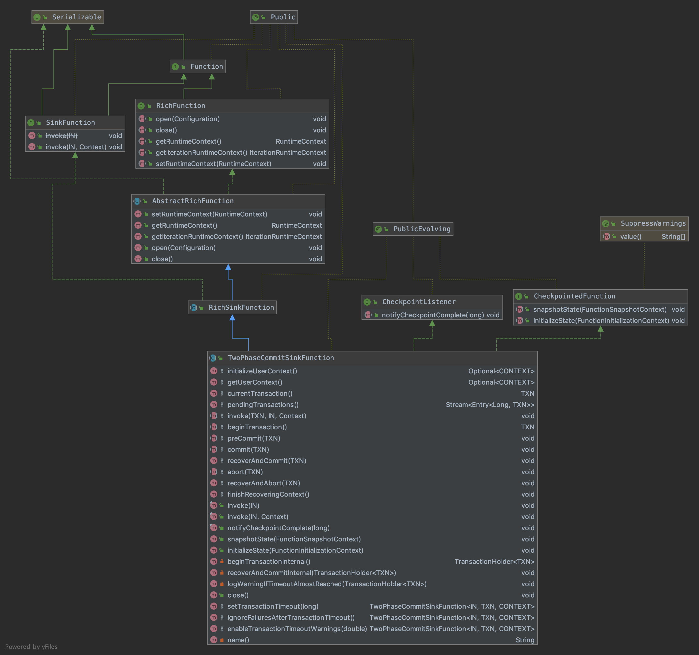

2017年发版的Flink 1.4.0，引进了一个里程碑式的新特性：TwoPhaseCommitSinkFunction ，抽象了两阶段提交协议的通用逻辑，相关联的jira单，并在Kafka Producer的connector中实现了它，支持了对外部Kafka sink的exactly-once语义。在此基础上，结合 Flink、sources、sinks 和 Kafka 0.11以上的版本，可以实现端到端一致性语义的应用，需要用户实现少数方法来实现一致性语义。
在这篇博客中，介绍以下几个方面：
- 描述 Flink checkpoints 在保证一致性语义中的角色作用
- 展示Flink如何通过两阶段提交协议与sources和sinks交互，以提供端到端的一致性语义
- 通过一个简单的示例，通过使用 TwoPhaseCommitSinkFunction ，实现落地到文件目的端的一致性语义
Flink中的exactly-once语义
Exactly-once语义简称EOS，指的是每条输入消息只会影响最终结果一次，注意这里是影响一次，而非处理一次。保证即使在机器或应用发生故障的情况下，也不会有重复数据或者漏处理的数据。
Flink应用内部的 exactly-once 是通过 Flink 的 checkpointing算法实现的，Flink 做 checkpoint 的一致性快照中的内容有：
- 应用的当前state
- 输入流的位置
Flink以可配置的间隔生成 checkpoints ，并持久化到存储系统，如 S3、HDFS 等。这个持久化过程是异步的，也就是说，Flink 在 checkpointing 的过程中会继续处理数据。当机器或应用发生故障后重启，Flink 会从最近一个成功完成的 checkpoint 恢复，恢复应用的state，回滚到输入流的消费位置，就像故障从来没发生过一样。
在 Flink 1.4.0 之前，exactly-once 语义仅限于 Flink 应用内部，不涉及到外部系统。为了实现端到端的 exactly-once 语义，外部系统必须与Flink checkpoint 协调处理提供一种能提交与回滚的写入方式。常见的协调提交与回滚操作的途径就是两阶段提交协议。
Flink中的端到端的exactly-once应用
Flink一直宣称自己支持EOS，实际上主要是针对Flink应用内部来说的，对于外部系统（端到端）则有比较强的限制：
- 外部系统写入支持幂等性
- 外部系统支持以事务的方式写入
Kafka的幂等性和事务
Kafka 在0.11版本之前只能保证 at-least-once 和 at-most-once 语义，从0.11版本开始，引入了幂等发送和事务，从而实现 exactly-once 语义。
幂等性
未引入幂等性之前，Kafka正常发送和重试发送消息的流程图如下：
未引入幂等性之前，Kafka重试发送消息的流程图如下，可能会造成数据重复：
为了实现Producer的幂等语义，Kafka引入了Producer ID（即PID）和Sequence Number。每个新的Producer在初始化的时候会被分配一个唯一的PID，该PID对用户完全透明而不会暴露给用户。
Producer发送每条消息<Topic, Partition>对于Sequence Number会从0开始单调递增，broker端会为每个<PID, Topic, Partition>维护一个序号，每次commit一条消息此序号加一，对于接收的每条消息，如果其序号比Broker维护的序号（即最后一次Commit的消息的序号）大1以上，则Broker会接受它，否则将其丢弃：
序号比Broker维护的序号大1以上，说明存在乱序。
序号比Broker维护的序号小，说明此消息以及被保存，为重复数据。
有了幂等性，Kafka正常发送和重试发送消息流程图如下：

幂等性机制仅解决了单分区上的数据重复和乱序问题，对于跨session和所有分区的重复和乱序问题不能得到解决。于是需要引入事务。
事务
// 待补充
端到端的exactly-once实现过程
Flink 支持的端到端的 exactly-once 不仅限于 Kafka，可以应用到其他的source/sink，只要它们提供了必需的协调机制。
以下示例中：
- 从Kafka读取数据的opertor(KafkaConsumer)
- 窗口聚合操作
- 写入到Kafka目的源的operator(KafkaProducer)，两个checkpoints之间的待写入数据集合，必须是事务操作，当发生故障时要能回滚。

预提交阶段
一次 checkpoint 的开始代表两阶段提交协议中的预提交阶段。Flink JobManager 向数据流中注入一个 checkpoint barrier ，分隔两次 checkpoints 之间的数据集合。barrier 从一个 operator 流向下一个 operator，每个 operator 接收到 barrier 之后就会触发 state backend 操作，做 state 快照。

Data Source存储它消费到Kafka位置，完成之后向下一个 operator 传递 barrier 。内部状态是指所有能通过 Flink state 存储和管理的状态。例如，窗口求和的状态。处理过程中如果只有内部状态，那么在与提交阶段就只需要持久化state，不需要额外的操作，因为Flink 会接管state的持久化操作，state 成功写入就进行 commit 操作，发生故障时会丢弃这些 state。

然而，如果处理过程中涉及到外部状态，外部状态来自于写入外部系统（如Kafka）时。为了保证 exactly-once ，外部系统必须支持整合二阶段提交协议的事务操作。在预提交阶段，data sink除了存储预提交的外部状态，还要进行事务的预提交操作。

当checkpoint barrier传递到所有的operators之后，代表预提交阶段完成。所有触发的state快照被认为是checkpoint的一部分，checkpoint 是整个应用的state快照，包括预提交的外部状态。发生故障时，就可以从上次的完整快照恢复。下一步就进入提交阶段了，JobManager通知所有的operator checkpoint已成功完成，处理每个 operator 的checkpoint完成的回调。data source 和 window operator 没有外部状态，因此在提交阶段不需要做任何操作，data sink有外部状态，外部系统的事务操作需要进行真正的提交操作了。

让我们总结一下上面的过程：
- 一旦所有的 operators 完成了预提交，就进行提交操作
- 如果其中一个operator的预提交操作失败，其他的预提交操作就会终止，并回滚到上一次成功执行的checkpoint中记录的状态
- 预提交成功之后，提交操作必须保证成功，所有的 operators 和 外部系统都要参与其中。如果提交失败（例如由于偶发性的网络问题），整个Flink应用就会失败，应用会根据用户设置的重启策略进行重启，重试提交操作。这个过程是很关键的，因为如果提交操作最终没有成功，将会导致数据丢失。
因此，我们可以确保所有的operators的对最终的checkpoint 结果都是一致的：数据不是被提交了，就是提交被终止并回滚了。
TwoPhaseCommitSinkFunction
使用idea自带的Diagrams插件，查看TwoPhaseCommitSinkFunction类的继承关系：

几个重要的方法
initializeState(FunctionSnapshotContext context)
初始化状态：直接开启一个新事务；
从已有的状态中恢复：
读取 state 中记录的待提交事务 pendingCommitTransactions 列表，执行状态恢复和事务commit操作，最后清空 pendingCommitTransactions 列表；
读取 state 中记录的 pending 状态的事务列表，执行事务abort操作。
1 |
|
snapshotState(FunctionSnapshotContext context)
两阶段提交 Function 做 state 快照，从 context 中取出当前的 checkpointId；
接着执行预提交操作，并把待提交的事务加到 pendingCommitTransactions 列表中；
开启一个新的事务；
存储新的state。
1 |
|
notifyCheckpointComplete(long checkpointId)
两阶段提交Function执行notify操作，遍历待提交事务列表，执行commit操作；
执行完 commit 操作的事务，从 pendingCommitTransactions 中移除。
1 |
|
需要子类实现的方法
- invoke：接收到数据，处理数据
- beginTransaction：开启事物，做一些准备工作
- preCommit：预提交阶段，进行预提交操作
- commit：提交阶段，进行真正的提交操作
- abort：回滚操作，撤回预提交阶段的操作
实现file sink exactly-once的示例
实现逻辑
要实现上面的过程会有点复杂，因此Flink抽象出一个TwoPhaseCommitSinkFunction类。
假设写入的目的端是磁盘文件系统 file sink，我们只需要实现以下4个方法就可以实现file sink 的 exactly-once 语义：
- invoke：接收到数据，将数据写入临时文件
- beginTransaction：开启事物，在目标文件系统的临时目录创建临时文件，创建写文件的writer，后续可以向临时文件中写入数据
- preCommit：预提交阶段，刷写并关闭文件，永远不会再向这个文件写入了。并为下一次checkpoint启用新的事务
- commit：提交阶段，将临时文件从临时目录移动到正式目录，显然这会让目的端数据延时可见
- abort：删除临时文件
当Flink任务发生故障时，所有的 operators 会恢复成最近一次成功生成的 checkpoint 中的状态。对于预提交的事务，我们必须存储足够的状态信息，以便在重启的时候决定提交还是回滚事务。在本例子中，存储的应该是临时文件和真正的存储目录。TwoPhaseCommitSinkFunction 考虑到了这个场景，从checkpoint中恢复状态时总是进行提交操作。我们应该确保写入目的端的提交操作是幂等的，通常情况下，这也不是一个必须要考虑的问题。在本例子中，临时文件不在临时目录中，就是已经被移动到真正的存储目录中了。
可以查看 Flink源码中自带的两阶段提交测试示例
自定义实现两阶段提交的function ContentDumpSinkFunction：
1 | /** |
定义事务操作类 ContentTransaction：
1 | /** |
模拟内存文件读写操作的应用类 ContentDump：
1 | /** |
测试
场景1:测试完整的两阶段提交流程
1 | /** |
运行结果：
通知checkpointId-1完成，此时会执行提交操作。在checkpointId-1 之前处理的数据只有42、43，前两次做snapshot产生了两个临时文件，提交阶段会将这两个临时文件移动到目的目录。
initializeState() 方法中会执行 beginTransactionInternal()，创建一个临时文件。
接着在做snapshot的过程中 snapshotState() 方法中会先执行 preCommit() 预提交操作，关闭之前的临时文件；再执行 beginTransactionInternal()，创建一个临时文件。
1 | File 5562e15f-7c27-447c-80e9-b1d773141bec in target directory. content [42] |
场景2:测试通知checkpoint完成之前出现故障
1 | /** |
运行结果：
重启之后，从checkpointId-1记录的snapshot恢复，initializeSize会读取状态并进行commit操作，42、43被成功提交了。
关闭会执行到AbstractUdfStreamOperator.close()，进而执行到 TwoPhaseCommitSinkFunction.close() -> ContentDumpSinkFunction.abort()，abort()方法中会清除临时文件。
1 | File e3154038-939d-4b07-bde2-a8a399a3a648 in target directory. content [43] |
场景3:忽略commit阶段超时提交的异常
1 | /** |
运行结果：
1 | File cd349e67-b6aa-4d04-8150-79e4f80f7058 in target directory. content [42] |
这个结果在前面的通知阶段就已经生成了。重启服务进行状态初始化，都会进行commit操作，这个操作可能一直失败直到超时，有时我们想放程序执行而不抛出异常，就可以通过设置以下两个属性：sinkFunction.setTransactionTimeout(transactionTimeout);sinkFunction.ignoreFailuresAfterTransactionTimeout();